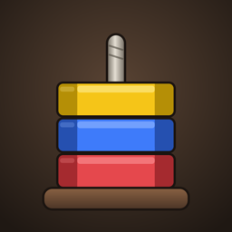

Hexsmith
A relaxing nut sort puzzle for iPhone and iPad.
iPhone ve iPad için rahatlatıcı bir somun sıralama bulmacası.
Sort the nuts, one bolt at a time
Lift the top nuts off a bolt and screw them onto another until every bolt holds a single color. 300 hand-checked levels, every one solvable, bring in new twists along the way: hidden nuts, frozen and locked bolts, chains, bombs, big nuts, chameleon nuts, one-way and tied bolts.
Somunları sırala, her seferinde bir civata
Bir civatanın üstündeki somunları alıp başka bir civataya vida, ta ki her civatada tek renk kalana kadar. Hepsi çözülebilir 300 bölüm yol boyunca yeni mekanikler getirir: gizli somunlar, donmuş ve kilitli civatalar, zincirler, bombalar, büyük somunlar, bukalemun somunlar, tek yönlü ve bağlı civatalar.
Support · Destek Privacy Policy · Gizlilik Politikası
© 2026 Uğurcan Eser